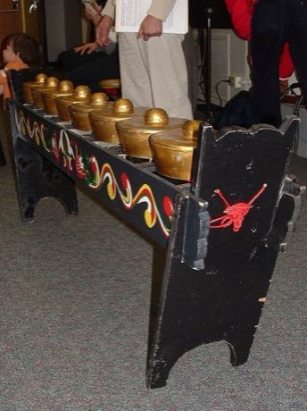

Home / Classical Worlds / Southeast Asia and the Islands
Playable heritage gameKulintang
Also known as gong-chime row
The kulintang is a row of eight small bossed gongs laid on a frame, lowest on the player's left, struck with two wooden beaters. One player leads the melody on the row while large hanging gongs, a single-headed drum and a small timekeeping gong hold the cycle underneath.

How to play
- Eight gongs lie in a row, numbered from the low gong on the left to the high gong on the right; three more pieces stand for the large gong, the drum and the small timekeeping gong.
- Notes travel around the ring. Strike each piece as its mark reaches the line, on the beat or on the half beat.
- Three patterns are offered, from slow and steady to quick and showy; each runs twice.
Rules at a glance
- Eight gongs are tuned to a five-note scale with unequal steps, so the row climbs a little more than an octave and a half.
- The large gong marks the start of each cycle; the drum and the small gong fill the beats in between.
- A stroke on the beat scores in full, a near stroke scores less, and an extra stroke costs a little.
- Each pattern repeats twice; the round ends when the last stroke is judged.
About the tradition
The kulintang is best known among the Maguindanao and Maranao peoples of Mindanao in the southern Philippines, and similar gong rows are played by neighbouring communities in Sulu, Sabah, Brunei and further east. It is played at weddings, festivals and welcomes, in slower old styles and quicker, freely varied newer ones.
Origins
Usually placed in the era of Classical Worlds (about 1000 BCE to 500 CE), although its exact origins are uncertain, within the cultural world of Southeast Asia and the Islands.
Credits
- Patterns: World Heritage Games (original teaching patterns)
- Photo: Philip Dominguez Mercurio, CC BY-SA 2.5, source on Wikimedia Commons
- Text: CC BY-SA 4.0, World Heritage Games.
Sources

Get the app
Kulintang is coming to the App Store and Google Play. One app, many traditions, no account needed.
Included in Drum Music of the World
More games to play


More from Philippines


Banig mat weaving
Philippines · Crafts and making
Jeepney painting
Philippines · Crafts and making
Ketupat
Malaysia +2 · Crafts and making
Luksong tinik
Philippines · Street and playground games